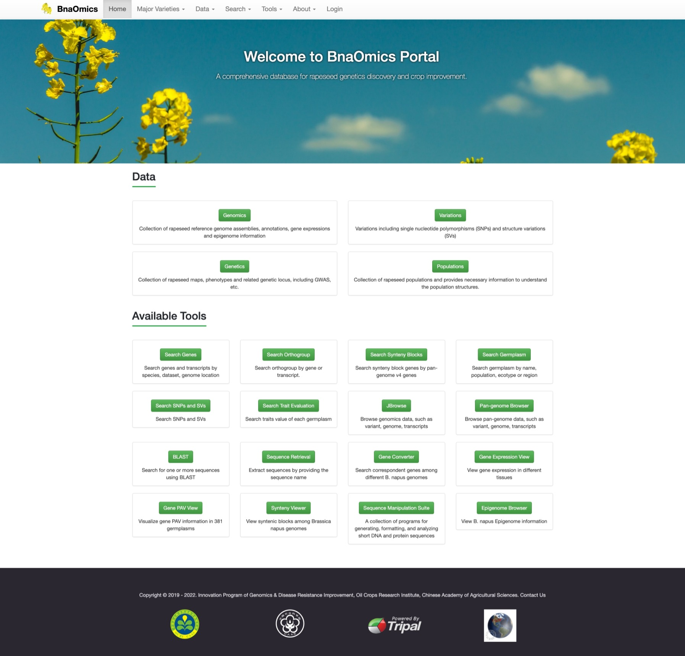

bnaomics-docs
About BnaOmics
Homepage Overview
Major Varieties Overview Page
Data Pages
Data Searches
Available Tools
Update Logs
bnaomics-docs
»
Welcome to BnaOmics user manual!
View page source
Welcome to BnaOmics user manual!

Contents
About BnaOmics
Homepage Overview
Major Varieties Overview Page
Data Pages
Genomics
Variations
Genetics
Populations
Data Searches
Genes and Transcripts
Orthogroup
Synteny Blocks
Germplasm
SNPs and SVs
Trait Evaluation
Available Tools
BLAST
Pan JBrowse (Pan-genome Browser)
JBrowse
Gene Converter
Sequence Retrieval
Synteny Viewer
Epigenome Browser
Gene Expression View
Gene PAV View
Sequence Manipulation Suite
Update Logs
2021-8-30 version 1.0 released
2021-8-30 version 1.1 released, add some tools